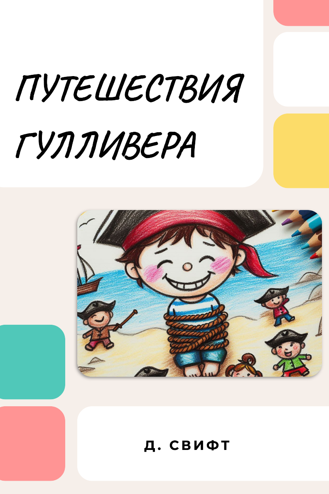

Тыңда
Қазақ тілінде тыңдау дағдыларын жақсартуға арналған аудио контенттерді тыңдаңыз. Подкасттар, әңгімелер және тіл үйрену сабағы сияқты мазмұндар бар.
Қ.Ж. Тоқаев - Әке туралы ой-толғау
2:35
Тыңдау
Н.Ә. Назарбаев - Менің өмірім.
3:40
Тыңдау

Джонатан Свифт - Гулливердің саяхаты
4:10
Тыңдау